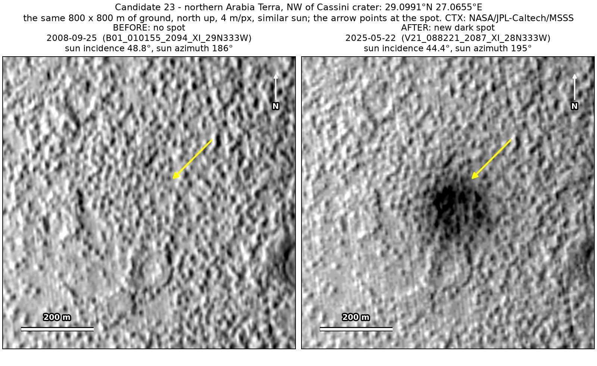
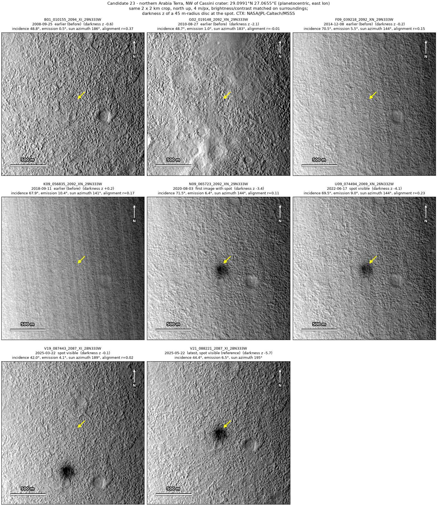
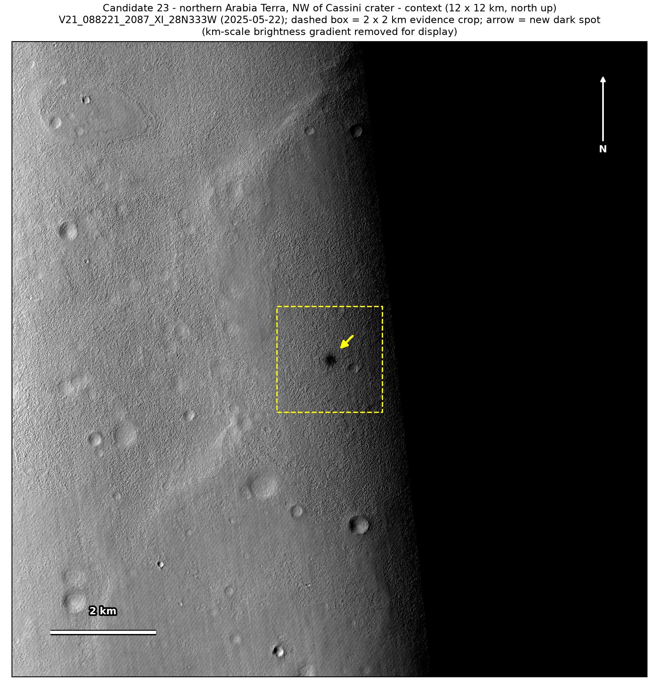
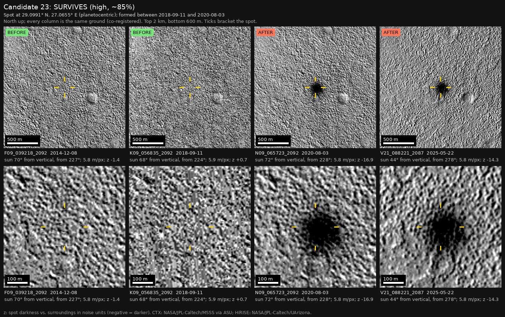

Professor of Mathematics
Paata Ivanisvili
Department of Mathematics, University of California, Irvine

← Possible new impact sites on Mars
Candidate 23: Northern Arabia Terra, north-west of Cassini crater
Strong · roughly 85%

What changed. A dark spot about 150 m across, with a darker core about 90 m across, appeared north-west of Cassini crater between September 2018 and August 2020. It is unchanged in images from 2022 and 2025.
Why it may be a new impact. Images from 2008, 2014 and September 2018 show nothing there. The 2018 image was taken at the end of a global dust storm, which cut its contrast to about a third, but a spot this dark would still have shown. It is seen with the sun at many heights, so it is not a shadow, and a round spot with a darker core that stays the same for five years is what the blast zone of a small impact looks like.
- Location
- 29.099° N, 27.066° E
- Absent
- 25 September 2008, 8 December 2014 and 11 September 2018
- Present
- 3 August 2020, 17 June 2022, 22 March 2025 and 22 May 2025
- Size
- Dark spot about 150 m across, with a darker core about 90 m across
- Confidence
- Strong candidate; roughly 85% that it is a new impact.
- Caveat
- Every CTX image of it from 2008 to 2022, including the 2020 image in which it first shows, was taken while HiRISE was monitoring an older impact 9.7 km away, so the camera teams may know of it without having published it. No HiRISE image covers it; the nearest ends 4.9 km away. Like every candidate here, it is unconfirmed: see the caveat.


